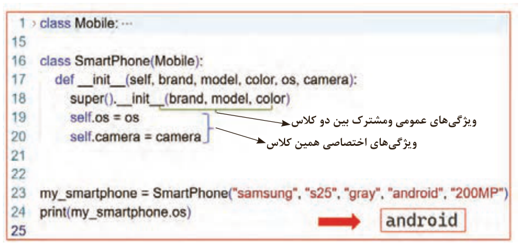
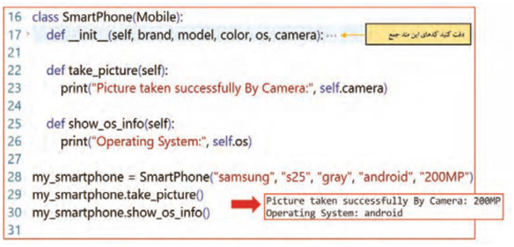
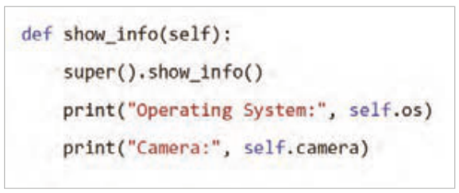

Gaming phone: نوعی گوشی هوشمند است که علاوه بر داشتن تمام قابلیتهای یک Smartphone، بهطور ویژه برای اجرای بازیها طراحی شده و از امکانات سختافزاری قویتری برخوردار است.
دارای ویژگی پردازنده گرافیکی قوی و مجزا
دارای ویژگی حافظه گرافیکی بالا
شکل ۱۱: موبایل پایه، هوشمند و موبایل مخصوص بازی
در پی این تصمیم از برنامهنویسان شرکت خواسته شده است کلاسهای لازمر برای موبایلهای تخصصی را نوشته و تعریف کنند.
جدول ۲
برند
مدل
رنگ
وضعیت
دوربین
سیستم عامل¹
حافظه
پردازنده گرافیکی
Mobile
Smartphone
GamingPhone
همانطور که در جدول مشاهده میشود، تمام گوشیها ویژگیهای مشترکی دارند: برند، مدل، رنگ و وضعیت. بنابراین، تعریف مجدد این ویژگیها در هر یک از کلاسهای گوشیهای تخصصی، منجر به تکرار کد خواهد شد.
برای جلوگیری از تکرار کد و استفادۀ بهتر از ویژگیهای مشترک گوشیها، میتوان از مفهوم ارثبری (Inheritance) در برنامهنویسی شیءگرا استفاده کرد.
ارثبری به این معناست که یک کلاس جدید میتواند ویژگیها (Attributes) و رفتار(Method) یک کلاس دیگر را به ارث ببرد و از آنها استفاده کند.
در این روش، ابتدا یک کلاس کلیتر تعریف میشود که شامل ویژگیهای مشترک تمام گوشیها مانند برند، مدل، رنگ و وضعیت است. به این نوع کلاس، کلاس والد (Parent class یا Super class) گفته میشود. در این مثال، کلاس Mobile بهعنوان کلاس والد، شامل تمام ویژگیهای مشترک همۀ موبایلهاست.
صفحه ۲۴۵
شکل ۱۲
سپس کلاسهای تخصصیتر براساس کلاس پایه ایجاد میشود. به این کلاسها، کلاس فرزند (Child class) گفته میشود. برای نمونه، کلاس Smartphone که از کلاس Mobile ارثبری میکند، تمام ویژگیهای کلاس Mobile را بهصورت خودکار در اختیار دارد و میتواند علاوه بر آن، ویژگیها و رفتارهای اختصاصی خود مانند سیستمعامل و دوربین را تعریف کند.
استفاده از این رویکرد نتایج زیر را به همراه دارد:
کاهش حجم کدنویسی
افزایش خوانایی کد
بهبود قابلیت نگهداری برنامه
در ادامه یک کلاس جدید به نام SmartPhone تعریف شده است که از کلاس Mobile ارثبری میکند. کد شکل 13 را ملاحظه بفرمایید.

شکل ۱۳: تعریف کلاس SmartPhone
خط 16: در این خط، کلاسی به نام SmartPhone تعریف میشود که از کلاس Mobile ارثبری میکند. این یعنی کلاس SmartPhone علاوه بر ویژگیها و متدهای خودش، تمام ویژگیها و متدهای کلاس Mobile را ارثبری کرده و به آنها دسترسی دارد.
به کلاس Mobile در این حالت، کلاس والد (Parent class یا Super class) گفته میشود.
به کلاس SmartPhone، کلاس فرزند (Child class) گفته میشود.
در این خط، جلوی نام کلاس SmartPhone داخل پرانتز نام کلاس والد (Parent class) باید نوشته شود.
خط 17: در این خط، متد سازندۀ ( __init__ ) کلاسِ SmartPhone تعریف میشود.
این متد در زمان ساخته شدن یک نمونه جدید از کلاس SmartPhone بهصورت خودکار اجرا میشود.
صفحه ۲۴۶
پارامترهای این سازنده شامل ویژگیهای عمومی گوشی (brand، model و color) و همچنین ویژگیهای اختصاصی گوشی هوشمند (os و camera) هستند.
خط 18: در این خط، سازنده کلاس والد (Mobile) با استفاده از تابع super فراخوانی میشود.
از متد super برای دسترسی به متدها و ویژگیهای کلاس والد در مبحث وراثت استفاده میشود.
وقتی یک کلاس از کلاس دیگری ارثبری میکند، با استفاده از super میتوان متدهای کلاس والد را فراخوانی کرد، بدون اینکه نام کلاس والد بهصورت مستقیم نوشته شود.
دقت کنید در این دستور تنها ویژگیهای مشترک کلاس فرزند و کلاس والد به متد __init__ از کلاس والد ارسال شده است.
با این کار، مقداردهی اولیه ویژگیهایی که در کلاس Mobile تعریف شدهاند انجام میگیرد.
دقت کنید اگر این خط از کد نوشته نشود، ویژگیهای کلاس والد در کلاس فرزند، مقداردهی نمیشوند.
به این ترتیب، از تکرار کد جلوگیری شده و ویژگیهای مشترک بین کلاسها به شکل اصولی مدیریت میشوند.
خط 19: در این خط، ویژگی os برای نمونه جاری ساخته میشود و مقدار آن برابر با مقدار ورودی پارامتر os قرار میگیرد.
این ویژگی نشاندهنده سیستمعامل گوشی هوشمند است.
خط 20: در این خط، ویژگی camera برای نمونه جاری ساخته میشود و مقدار آن برابر با مقدار ورودی پارامتر camera قرار میگیرد.
این ویژگی مشخصات دوربین گوشی هوشمند را نگهداری میکند.
خط 23: در این خط، یک نمونه (Instance) از کلاس SmartPhone ساخته میشود.
در زمان ساخت این نمونه، متد سازنده کلاس SmartPhone اجرا شده و مقادیر ارسالشده به پارامترها اختصاص داده میشوند.
علاوه بر این، با استفاده از تابع super، سازنده کلاس والد (Mobile) اجرا میشود تا ویژگیهای پایۀ گوشی، که در کلاس والد تعریف شدهاند، مقداردهی شوند.
شکل ۱۴
خط 24: در این خط، مقدار ویژگی os از نمونه my_smartphone خوانده شده و در خروجی برنامه چاپ میشود.
خروجی این دستور مقدار "android" خواهد بود.
صفحه ۲۴۷
فراخوانی متدهای کلاس والد از طریق کلاس فرزند
تا اینجا متوجه شدید که کلاس SmartPhone ویژگیهای کلاس Mobile را به ارث برده است. اگر کد کلاس SmartPhone را مشاهده کنید، درون آن بهجز متد __init__ متد دیگری وجود ندارد. برای بررسی اینکه آیا از کلاس والد (Parent) متدها را هم به ارث برده است یا خیر، دستور زیر را در انتهای برنامه نوشته و برنامه را اجرا میکنیم:
با مشاهده خروجی متوجه میشوید نمونه my_smartphone متد show_info را از کلاس Mobile به ارث برده است.
ایجاد متد مستقل از والد درون کلاس فرزند
در اینجا یک سؤال مطرح میشود که آیا کلاس فرزند (Child class) میتواند خودش بهصورت مستقل متد داشته باشد؟
پاسخ مثبت است. برای این منظور میتوانید متدهای جدید و مستقل درون کلاس فرزند تعریف و از آنها استفاده کنید.
در ادامه به کلاس SmartPhone متدهای take_picture برای گرفتن عکس و show_os_info برای نمایش ویژگی نام سیستم عامل را اضافه میکنید. کد شکل 16 را به دقت نوشته و اجرا کنید.

شکل ۱۶: تعریف دو متد جدید درون کلاس SmartPhone
صفحه ۲۴۸
خطوط 22 و 23: در این خطوط، متد take_picture تعریف شده و درون آن یک پیغام مبنی بر موفقیت در گرفتن عکس چاپ شده است.
خطوط 25 و 26: در این خطوط، متد show_os_info تعریف شده و درون آن مشخصات ویژگی سیستمعامل چاپ شده است.
بازنویسی متد والد درون کلاس فرزند (Method Override)
میدانید که در کلاس Mobile متدی با نام show_info تعریف شده است که اطلاعات عمومی گوشی را نمایش میدهد. حال اگر کلاسی مانند SmartPhone از کلاس Mobile ارثبری کند، این متد نیز به کلاس فرزند منتقل شده و بدون تغییر قابل استفاده خواهد بود.
در گوشیهای هوشمند، علاوه بر اطلاعات عمومی، نمایش اطلاعات بیشتری مانند نام سیستمعامل و مشخصات دوربین اهمیت دارد. استفادۀ مستقیم از متد show_info کلاس والد برای کلاس SmartPhone کافی نیست و لازم است رفتار این متد متناسب با ویژگیهای کلاس فرزند تغییر کند.
برای حل این مشکل، متد show_info در کلاس SmartPhone بازنویسی میشود. به این ترتیب، میتوان ابتدا با دستورsuper() متد کلاس والد را اجرا کرد و سپس اطلاعات جدید مورد نیاز را نمایش داد. این کار باعث میشود در متد بازنویسیشدۀ کلاس فرزند، ابتدا دستورات متد والد اجرا شده و سپس دستورات جدید نوشته و اجرا شوند.
اکنون میتوانید متد show_info را مطابق کد زیر در کلاس SmartPhone اضافه نمایید و نتیجۀ اجرای برنامه را مشاهده کنید.

شکل ۱۷
در خط اول کد، متدی با نام show_info درون کلاس SmartPhone تعریف شده است. نام این متد دقیقاً با نام متد موجود در کلاس والد یکسان است؛ به همین دلیل این متد بهعنوان بازنویسی (Override) متد کلاس والد شناخته میشود.
در دومین خط، با استفاده از متد super، متد show_info از کلاس والد (Mobile) اجرا میشود. به این ترتیب، اطلاعات عمومی گوشی مانند برند، مدل و رنگ که در کلاس والد تعریف شدهاند، در ابتدای همین متد نمایش داده میشوند.
در سومین خط، مقدار ویژگی os که مربوط به کلاس SmartPhone است، چاپ میشود. این ویژگی نشاندهندۀ نام سیستمعامل گوشی هوشمند میباشد و در کلاس والد وجود ندارد.
در آخرین خط، مقدار ویژگی camera نمایش داده میشود. این ویژگی نیز مخصوص کلاس SmartPhone بوده و مشخصات دوربین گوشی هوشمند را نشان میدهد.
صفحه ۲۴۹
بازنویسی متد والد در کلاس فرزند، به گونهای که نام متد یکسان باقی بماند اما نحوۀ اجرای آن تغییر کند، بازنویسی متد یا Method Override نامیده میشود.
تا اینجا با تعریف کلاس Mobile و ساخت نمونههایی از آن آشنا شدید. همچنین دیدید که میتوان به ویژگیهای هر نمونه دسترسی داشت و مقدار آنها را تغییر داد. اما این پرسش مطرح میشود که آیا همۀ ویژگیهای یک کلاس باید بهصورت آزاد قابل تغییر باشند؟
ویژگیهای عمومی (Public)
در حالت عادی، ویژگیهای یک کلاس، عمومی (Public) هستند. یعنی از هر بخش از برنامه میتوان به آنها دسترسی داشت و مقدارشان را تغییر داد. برخی ویژگیها حتی اگر بهصورت عمومی تعریف شوند، مشکلی ایجاد نمیکنند؛ زیرا تغییر آنها باعث بروز خطای منطقی در برنامه نمیشود. در کلاس Mobile که قبلاً ساختیم، سه ویژگی brand، model و color از این نوع هستند زیرا:
تغییر آنها خطرناک نیست.
نیازی به کنترل خاص ندارند.
بنابراین میتوانند بهصورت Public باقی بمانند.
حال فرض کنید ویژگی باتری گوشی را نیز بهصورت عمومی تعریف کنید (برای سادگی، فرض کنید مقدار اولیه باتری 100% در نظر گرفته شده است):
self.battery = 100
در این حالت، میتوان مقدار باتری را به شکل زیر تغییر داد:
my_mobile.battery = 150
my_mobile.battery = -20
Page 244
Gaming phone: a kind of smartphone that, besides having all the capabilities of a Smartphone, is designed especially to run games and has stronger hardware.
Has a strong and separate graphics processor property
Has a large graphics memory property
Figure 11: A basic mobile, a smartphone and a gaming mobile
Following this decision, the company's programmers have been asked to write and define the classes needed for the specialised mobiles.
Table 2
Brand
Model
Color
Status
Camera
Operating system¹
Memory
Graphics processor
Mobile
Smartphone
GamingPhone
As seen in the table, all phones have common properties: brand, model, colour and status. So defining these properties again in each of the specialised phone classes would lead to repeated code.
To prevent repeated code and make better use of the phones' common properties, the concept of inheritance in object-oriented programming can be used.
Inheritance means that a new class can inherit the properties (Attributes) and behaviour (Methods) of another class and use them.
In this method, first a more general class is defined that includes the properties common to all phones, such as brand, model, colour and status. This kind of class is called the parent class (Parent class or Super class). In this example, the class Mobile, as the parent class, includes all the properties common to all mobiles.
Page 245
Figure 12
Then more specialised classes are created based on the base class. These classes are called child classes. For example, the class Smartphone, which inherits from the class Mobile, automatically has all the properties of the class Mobile and can, in addition, define its own special properties and behaviours such as the operating system and the camera.
Using this approach brings the following results:
Less coding
More readable code
Better maintainability of the program
Next, a new class named SmartPhone is defined that inherits from the class Mobile. See the code of Figure 13.
Figure 13: Defining the class SmartPhone
Line 16: in this line a class named SmartPhone is defined that inherits from the class Mobile. This means that the class SmartPhone, besides its own properties and methods, has inherited all the properties and methods of the class Mobile and can reach them.
In this case the class Mobile is called the parent class (Parent class or Super class).
The class SmartPhone is called the child class.
In this line, after the name of the class SmartPhone, the name of the parent class must be written inside parentheses.
Line 17: in this line the constructor method (__init__) of the class SmartPhone is defined.
This method runs automatically when a new instance of the class SmartPhone is made.
Page 246
The parameters of this constructor include the general properties of the phone (brand, model and color) and also the special properties of the smartphone (os and camera).
Line 18: in this line the constructor of the parent class (Mobile) is called using the function super.
The method super is used to reach the methods and properties of the parent class in the topic of inheritance.
When a class inherits from another class, with super the methods of the parent class can be called without writing the name of the parent class directly.
Note that in this statement only the properties common to the child class and the parent class are sent to the method __init__ of the parent class.
By doing this, the initial values of the properties defined in the class Mobile are set.
Note that if this line of code is not written, the properties of the parent class are not given values in the child class.
In this way, repeated code is prevented and the properties common between the classes are managed in a proper way.
Line 19: in this line the property os is created for the current instance and its value is set equal to the input value of the parameter os.
This property shows the operating system of the smartphone.
Line 20: in this line the property camera is created for the current instance and its value is set equal to the input value of the parameter camera.
This property keeps the specifications of the smartphone's camera.
Line 23: in this line an instance of the class SmartPhone is made.
When this instance is made, the constructor method of the class SmartPhone runs and the values sent to the parameters are assigned.
In addition, using the function super, the constructor of the parent class (Mobile) runs so that the basic properties of the phone, which are defined in the parent class, are given values.
Figure 14
Line 24: in this line the value of the property os of the instance my_smartphone is read and printed in the output of the program.
The output of this statement will be the value "android".
Page 247
Calling the parent class's methods through the child class
So far you have understood that the class SmartPhone has inherited the properties of the class Mobile. If you look at the code of the class SmartPhone, there is no method in it other than __init__. To check whether it has inherited the methods from the parent class too, we write the following statement at the end of the program and run the program:
By looking at the output you understand that the instance my_smartphone has inherited the method show_info from the class Mobile.
Creating a method independent of the parent inside the child class
Here a question comes up: can the child class have methods of its own independently?
The answer is yes. For this you can define new and independent methods inside the child class and use them.
Next you add to the class SmartPhone the method take_picture for taking a photo and show_os_info for showing the property of the operating system name. Write and run the code of Figure 16 carefully.
Figure 16: Defining two new methods inside the class SmartPhone
Page 248
Lines 22 and 23: in these lines the method take_picture is defined and inside it a message about the success of taking a photo is printed.
Lines 25 and 26: in these lines the method show_os_info is defined and inside it the specifications of the operating system property are printed.
Rewriting the parent's method inside the child class (Method Override)
You know that in the class Mobile a method named show_info is defined that shows the general information of the phone. Now if a class such as SmartPhone inherits from the class Mobile, this method is also passed to the child class and can be used unchanged.
In smartphones, besides the general information, showing more information such as the name of the operating system and the specifications of the camera matters. Using the method show_info of the parent class directly for the class SmartPhone is not enough, and the behaviour of this method must be changed to suit the properties of the child class.
To solve this problem, the method show_info is rewritten in the class SmartPhone. In this way, first the method of the parent class can be run with the statement super() and then the new needed information can be shown. This makes it so that in the overridden method of the child class, the statements of the parent method run first and then the new statements are written and run.
Now you can add the method show_info to the class SmartPhone as in the following code and see the result of running the program.
Figure 17
In the first line of the code, a method named show_info is defined inside the class SmartPhone. The name of this method is exactly the same as the name of the method in the parent class; that is why this method is known as an override of the parent class's method.
In the second line, using the method super, the method show_info of the parent class (Mobile) runs. In this way, the general information of the phone such as the brand, model and colour, which are defined in the parent class, is shown at the start of this method.
In the third line, the value of the property os, which belongs to the class SmartPhone, is printed. This property shows the name of the smartphone's operating system and does not exist in the parent class.
In the last line, the value of the property camera is shown. This property is also special to the class SmartPhone and shows the specifications of the smartphone's camera.
Page 249
Rewriting the parent's method in the child class so that the name of the method stays the same but the way it runs changes is called method rewriting or Method Override.
So far you have got to know defining the class Mobile and making instances of it. You also saw that the properties of each instance can be reached and their values changed. But the question comes up: must all the properties of a class be freely changeable?
Public properties
Normally, the properties of a class are public. That is, they can be reached and their values changed from any part of the program. Some properties cause no problem even if they are defined as public, because changing them does not cause a logical error in the program. In the class Mobile we made earlier, the three properties brand, model and color are of this kind because:
Changing them is not dangerous.
They need no special control.
So they can stay Public.
Now suppose you also define the battery property of the phone as public (for simplicity, suppose the initial battery value is set to 100%):
self.battery = 100
In this case, the battery value can be changed as follows: